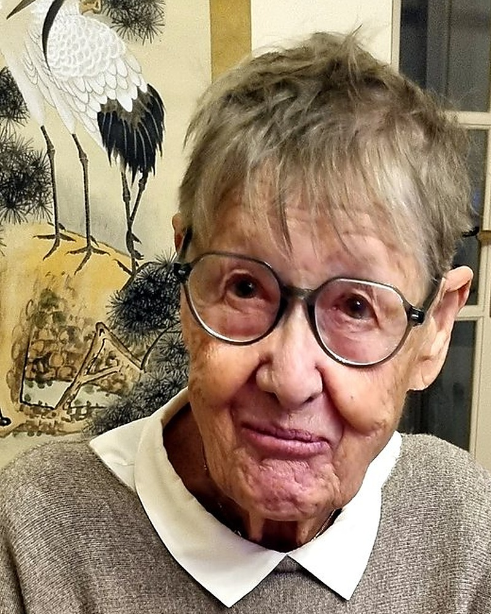

À presque 90 ans, Ingrid Brunstein sait de quoi elle parle. Elle affirme que c'est bien la fragilité liée à l'âge qui invite l'inconnu croisé au hasard à oser la rencontre, à toucher et à être touché à son tour.
La vieille dame se balade dans la ville d'Aix-en-Provence avec sa canne blanche et fait des rencontres, parfois drôles et souvent émouvantes. À travers ses anecdotes et poèmes, elle raconte avec tendresse que l'âge n'est aucunement une calamité, mais plutôt une chance, une vocation même.
Pour bien vieillir, il faut de l'amour. Et de l'humour aussi !
Extrait de l'avant-propos, « Ensemble »
À presque 90 ans, il m'arrive tant de choses réjouissantes ! Et je vous préviens : elles n'ont rien à faire avec les recherches statistiques officielles, d'après lesquelles il est établi que les gains de productivité baissent avec l'âge des travailleurs, pendant que les dépenses de protection sociale augmentent.
À travers mes anecdotes, puis mes poèmes qui vous invitent parfois à faire un petit pas de côté, je vous propose une autre vision du monde. Elle prouve que nos fragilités peuvent, au contraire, atténuer les vôtres. Peut-être que c'est une histoire de rencontre !
Fiche de l'ouvrage
Auteure
Ingrid Brunstein
Éditeur
Atelier des livres, Aix-en-Provence
Parution
Juillet 2026
Langue
Français
Format
15 × 21,5 cm · 61 pages · 110 g
ISBN
979-10-91271-92-9
Nouveau prix
19 €
Commander « Touchants – Touchés »
Renseignez vos coordonnées : votre commande est transmise directement à l'auteure, qui vous confirme par e-mail les modalités de règlement et d'envoi.
Nouveau prix : 19 €Frais d'envoi : 6,00 € en France, 14,45 € vers l'Allemagne (envoi suivi La Poste) ; autres pays : sur demandeDélai de livraison : environ 7 jours de préparation + environ 3 jours de livraison (délai indicatif La Poste)Règlement : virement ou chèque (chèque réservé à la France), à réception de la confirmation
L'homme à l'échine pliée Réflexions sur le stress professionnel
Desclée de Brouwer, collection Sociologie clinique · 1999
Ouvrage collectif sous la direction d'Ingrid Brunstein, avec Nicole Aubert, Jean-François Chanlat, Eugène Enriquez, Christian Jayet, Alexis Lehmann, Jean-Pierre Neveu, Thomas Périlleux et Didier van den Hove.
Walter de Gruyter, collection De Gruyter Studies in Organization · 1995
Ouvrage collectif en anglais, publié sous la direction d'Ingrid Brunstein, décrivant les particularités de la Gestion des Ressources Humaines dans chacun des 12 pays d’Europe.
Collection « Ergonomie et gestion » · Octarès · 1988 Ingrid Brunstein et Pierre Andlauer
Les auteurs sont à la recherche de la meilleure compatibilité possible entre les contraintes technico-économiques de l’Entreprise et les besoins physiologiques et sociaux des Hommes.

Biographie
Universitaire et chercheuse en sciences humaines, philologue, autrice et artiste.
Née le 17 avril 1937 à Brunswick (Braunschweig) en Allemagne, Ingrid Brunstein (née Bielitz) est philologue de formation première et a enseigné l'anglais et l'allemand aux adultes. Après un DESS en gestion des ressources humaines, elle a travaillé en tant que DRH dans la métallurgie, puis, après un doctorat ès sciences des organisations, elle a été nommée maître de conférences à l'université de Strasbourg. Habilitée à diriger des recherches, elle y a pris la responsabilité de deux DESS : Gestion des Ressources Humaines et Innovation Sociale et Conduite du Changement.
Elle vit en France depuis plus de soixante ans et a écrit de nombreux articles et livres liés à ses recherches, ainsi que « Ici pas de survivants », récit-document sur son enfance allemande pendant la Seconde Guerre mondiale, et « L'homme du tableau », roman historique. Son dernier ouvrage, « Touchants – Touchés », réunit des poèmes relatant des anecdotes intergénérationnelles.
Mélomane, elle a fondé et présidé l’association « Opéra au Village » à Pourrières, et a présidé l’Académie Bach à Aix-en-Provence.
Poète et artiste peintre, elle a fait partie de la communauté artistique des Amis du Cagnard.